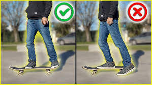
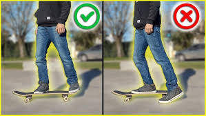

Cosas a tener en cuenta:
Al inicir en el skate, es importante tener paciencia y no estresarse. comprender que requiere practica y constancia, tener precente que se esta expuesto a caidas y posibles leciones graves, por lo tanto es bueno tener cierta proteccion, ya sea el casco, rodilleras o coderas, y si es posible todas juntas, ademas de una buena idratacion.
Primeros pasos
Lo primero que se debe poner en practica, es el equilibrio y estabilidad, con ayuda de un amigo o estructura como punto de apoyo, tomando en cuenta el piso, ya que si es muy liso hay mas probabilidad de caerse.
 

Demostracion
A medida que se practica se podran lograr desde el truco mas basico, hasta poder realizar trucos con una alta dificultad
Demostracion del olli Demostracion del kickflip Demostracion del hospitalflip COMBINACIONES